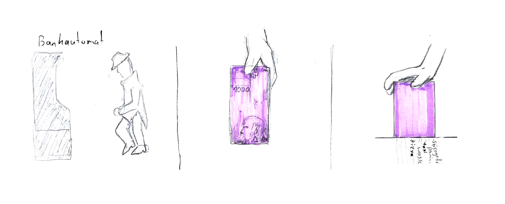
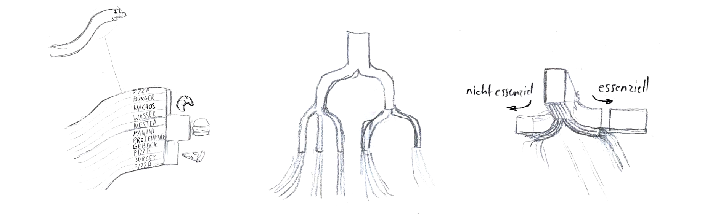
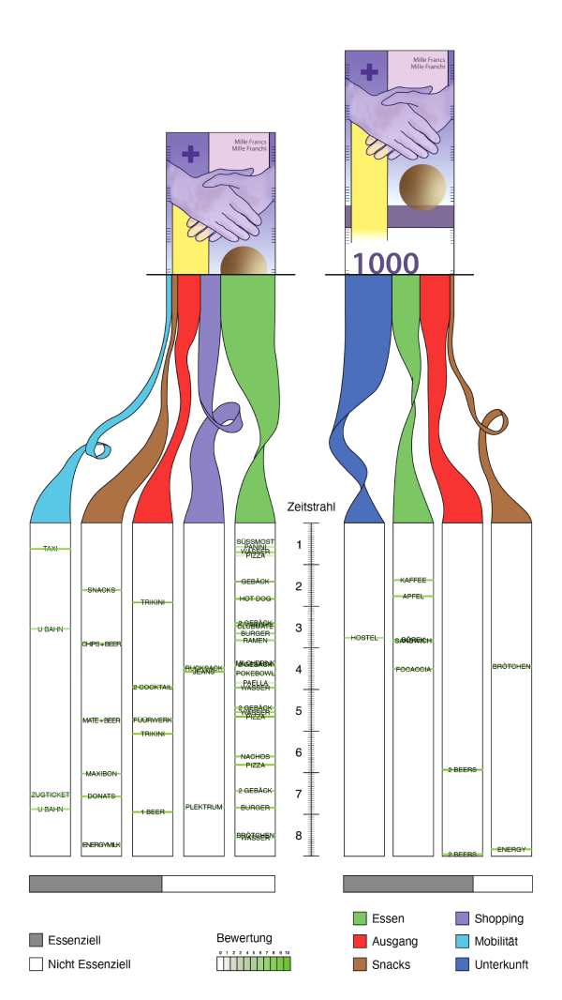
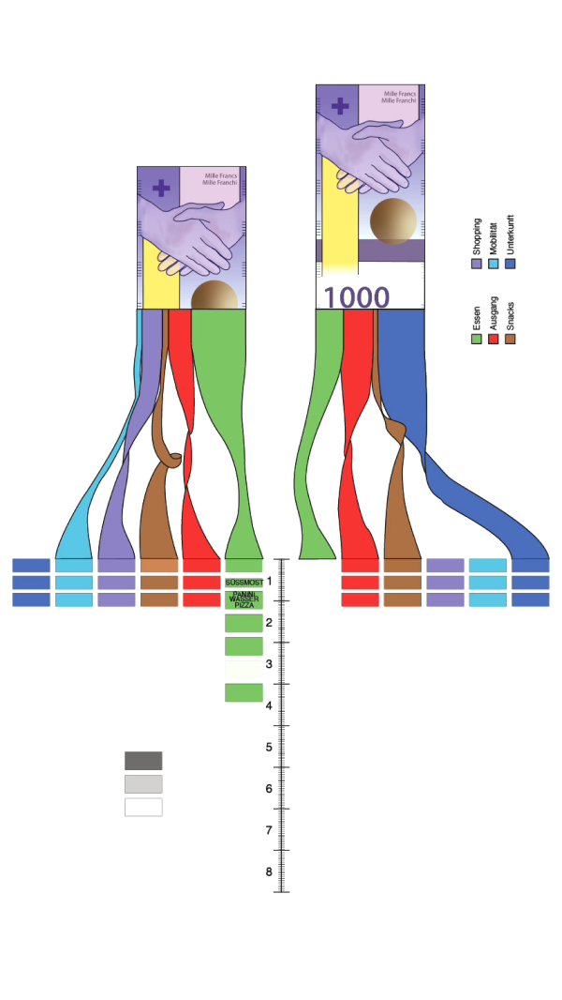
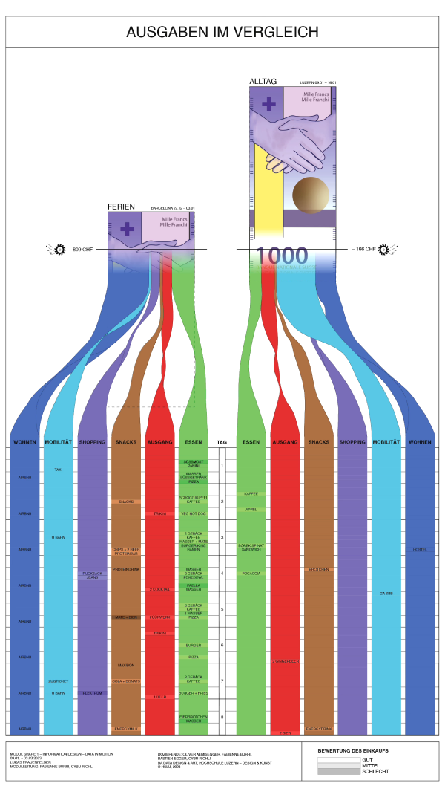

Prozess
Ich wusste schon recht früh, dass ich die Metapher des Geld shreddern nutzen wollte. Ich machte vielen Skizzen und so wurde die Idee immer klarer. Durch mehrere Überarbeitungen und hilfreiche Gespräche konnte ich meinen Entwurf stetig verbessern. Ich habe wohl noch nie so viele Versionen eines Enwurfs gemacht wie in diesem Modul.
 


